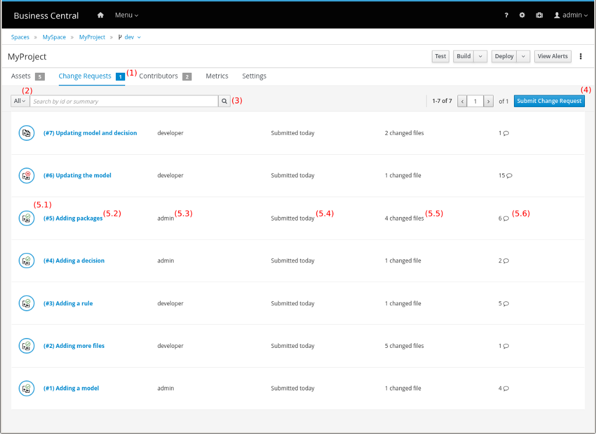
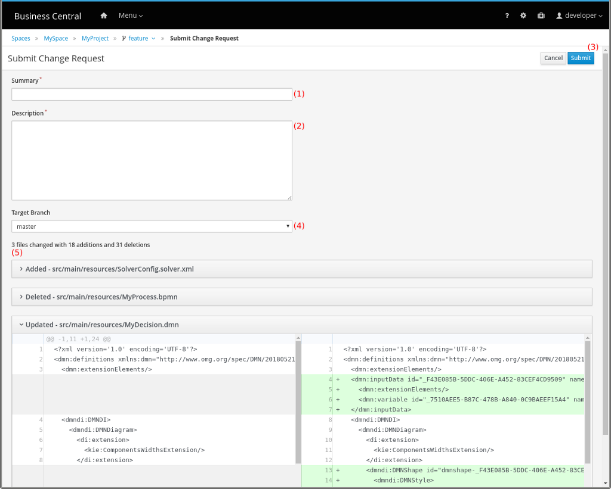
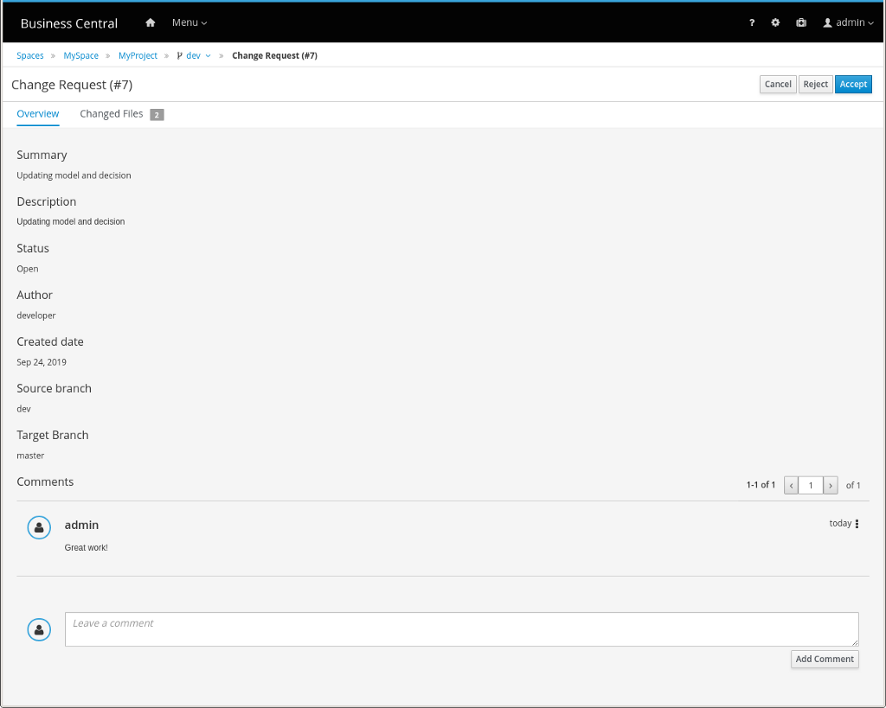
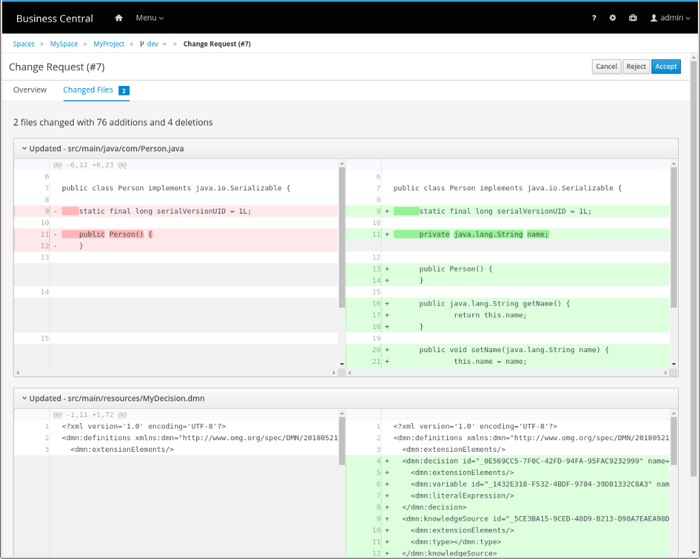

Workspace collaboration via change requests
A new feature has just been integrated into kiegroup master branches and is available in Business Central releases. This new feature is the workspace collaboration via change requests.

Introduction
The possibility to work with multiple branches in the Business Central authoring environment is highly productive, which makes it necessary to provide a way for users to easily integrate their changes between branches. The most common use case would be users making changes in a feature branch and integrating these changes into the master branch afterward.
With that in mind, the foundation team is introducing a change request flow out of the box, allowing users to submit their changes for approval from one branch to another, as well as the ability to review the changes prior to the integration. The feature is basically divided into three actions: listing, submitting, and reviewing. The following sections briefly walk through each one of them.
Listing
Named Change Requests, a new tab has been added between the Assets and Contributors tabs on the project screen. This new tab presents a list of change requests that have been submitted by users to the project, including both open and closed ones. Let’s dive into each part of the UI.

(1) Badge: Indicate the number of currently open change requests within the selected project;
(2) Filter: Filter the list to show open change requests, closed ones, or all of them;
(3) Search: Search mechanism by id and/or summary;
(4) Submit: Button that opens the submit change request screen;
(5) List of change requests:
(5.1) Status icon: Indicate the status of the change request, which can be open, merged, or rejected.
(5.2) Name: Concat the auto-generated id and the summary defined by the author;
(5.3) Author: The user who has submitted the change request;
(5.4) Date: The amount of time since the change request submission;
(5.5) Changed files counter: The number of changed files included in the change request;
(5.6) Comments counter: The number of comments received in the change request.
Submitting
The submit change request screen allows users to prepare and submit changes from the current branch to a destination branch. There is a button in the project kebab as well as in the change requests tab that gives access to the aforementioned screen. Let’s dive into each part of the UI.

(1) Summary: Short summary of the change request;
(2) Description: A more detailed description of what has been done in the change request;
(3) Submit: Button to submit the change request for the review process;
(4) Target branch: List of destination branches that the user has read access to;
(5) Differences: List of highlighted textual differences between the current and destination branches.

Reviewing
Once submitted, the change request will be available in the change requests tab for all users who have read permission on the destination branch. When clicking on any change request in the change requests tab, a review screen is opened, which contains two tabs: Overview and Changed Files. Let’s dive into each part of the UI.
Overview
This tab includes all the relevant information about the change request, such as summary, description, status, author, submitted date, and involved branches. Additionally, users can interact with each other via comments.

Changed Files
Similar to the submit screen, this tab includes all changed files and their corresponding highlighted textual differences. Moreover, the data in the tab will keep reflecting on all the differences between the involved branches as long as the status of the change request is Open.

Finally, users who have write permission on the destination branch can, besides commenting, either reject or accept the change request. Once accepted, all the changes included in the change request are merged into the destination branch.
Demonstration
Let’s demonstrate the flow of the following use case: a developer user, who has limited permissions, will make some changes in a feature branch, then submit a change request to the master branch, and interact with a second user during the review process. This second user, who is the administrator having all the permissions, will review the change request, ask for more changes, and then conclude the process by accepting the change request.
And that’s all for today. Thanks for reading! 🙂
Workspace collaboration via change requests was originally published in kie-tooling on Medium, where people are continuing the conversation by highlighting and responding to this story.